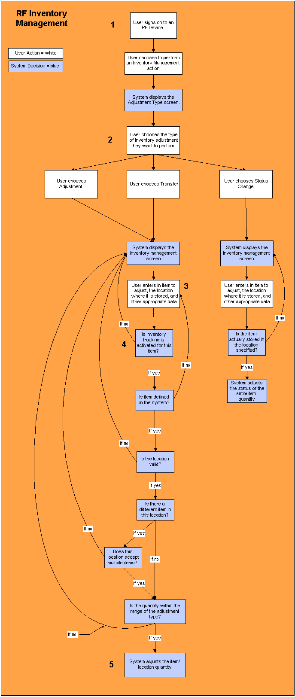

** Process Flows **
This process diagram illustrates how the system uses inventory management to adjust inventory quantities in the warehouse.

Inventory management represents several processes, all of which concern adjusting item quantities at inventory locations in the warehouse: positive & negative adjustments, status changes, and transfers from one location to another.
A situation arises in the warehouse where a quantity of inventory needs to be adjusted. A warehouse employee signs on to an RF device in order to rectify the situation.
The user chooses to perform an inventory management action from the RF main menu. The system will display the user and warehouse authorized adjustment types. The specific fields that the system displays will depend on the adjustment type chosen.
Item Adjustment / Location Transfer: The user enters into the RF device the item that they want to adjust, and the location where this item resides. Also entered is such data as company and lot number.
Status Adjustment: The user enters into the RF device the item that they want to change the status of, and the location where it is stored. Also entered is such data as company and lot number. You can change the status of an item quantity in one location, or all location(s) in the warehouse which contain a quantity of this item.
Item Adjustment / Location Transfer: The system will need to determine if this item is eligible for inventory tracking. Items can only be adjusted if the system is currently tracking its inventory. Inventory tracking is defined per item on the Item Window. If this item has inventory tracking active, the system will continue with the adjustment process. If it is not, the system will alert you of this fact, and ask you for another item.
Other validations the system will need to perform include the following:
Status Adjustment: The system will perform a validation to make sure that the item actually resides in the location that you specified. If it does, the system will adjust the item's status. If it is not, the system will ask you for another item/location combination. This is the end of the status adjustment process.
After the system has performed all the appropriate validation steps outlined above, the system will adjust the item quantity.